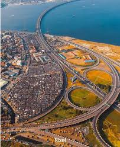
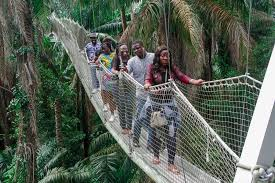
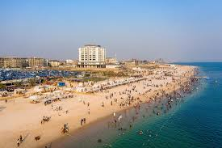
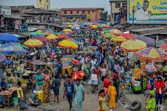
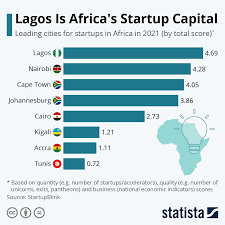
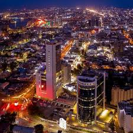

Lagos has one of the most advanced and rapidly developing infrastructures in Nigeria.
The city is filled with major road networks, bridges, and modern buildings that support its large population.
One of the most iconic structures is the Third Mainland Bridge, which connects the island
to the mainland and plays a key role in daily transportation across the city.

Despite challenges like traffic congestion, ongoing development projects continue to improve
transportation, housing, and urban planning across Lagos.
Nature
Even though Lagos is a busy urban city, it still contains peaceful natural environments
where residents and tourists can relax and connect with nature.
The Lekki Conservation Centre is one of the most famous nature reserves in Lagos,
offering wildlife viewing, green spaces, and the longest canopy walkway in Africa.

These natural spaces help balance the fast-paced lifestyle of the city and provide
important conservation areas for plants and animals.
Beaches
Lagos is home to some of the most beautiful beaches in Nigeria, attracting both locals
and tourists looking for relaxation and entertainment by the Atlantic Ocean.
Beaches such as Tarkwa Bay and Elegushi Beach are popular destinations for swimming,
picnics, boat rides, and beach parties.

These coastal areas are an important part of Lagos culture and provide a peaceful escape
from the busy city life.
Culture
Lagos is one of the most culturally diverse cities in Africa, with people from different
ethnic groups, traditions, and backgrounds living together.
The city is known for its music, fashion, art, and street life. It is the home of Afrobeat
and many internationally recognized Nigerian artists.

Markets, festivals, and everyday street activities reflect the energy and creativity that
define Lagos culture.
Economy & Business
Lagos is the economic heartbeat of Nigeria and one of the fastest-growing economies in Africa.
It is home to major banks, tech companies, markets, and industries that drive national development.

From startups in Yaba (Nigeria’s Silicon Valley) to large corporations in Victoria Island,
Lagos continues to attract investors and entrepreneurs from around the world.
Nightlife & Entertainment
Lagos is famous for its vibrant nightlife. The city comes alive at night with music,
clubs, concerts, beach parties, and cultural festivals.

Areas like Victoria Island and Lekki are known for their energy, music, and social life,
making Lagos one of Africa’s most exciting cities after dark.